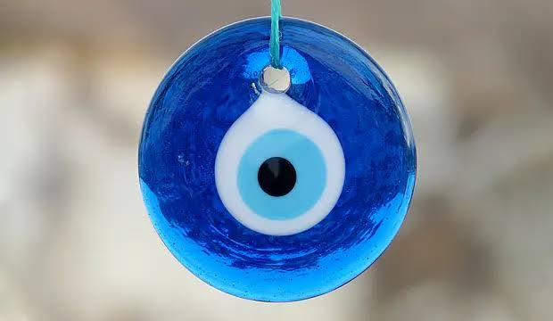
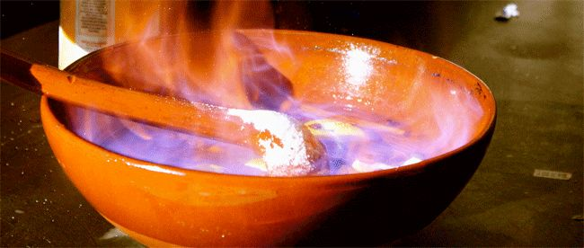

Conceptos
O mal de ollo


Ficha rápida do concepto
- Nome: O mal de ollo
- Tipo: Crenza popular galega
- Que é? A crenza de que unha mirada cargada de envexa pode causar dano ou mala sorte.
- Como se evitaba? Con amuletos, ensalmos, sal, allos ou a coñecida figa.
O concepto en si
Quen non pensou algunha vez que tiña un mal de ollo enriba? Eu si. E vou dicir unha cousa que igual soa un pouco rara: creo bastante nestas cousas.
Non sei se é porque medrei escoitando estas historias ou porque en Galicia é imposible escapar delas. Hai días nos que todo sae do revés e, antes de pensar que simplemente tiveches mala sorte, sempre che pasa pola cabeza: "A ver se vou ter un mal de ollo..."
É unha expresión que escoitei toda a vida, pero nunca me parara a pensar de onde viña.
Na tradición galega críase que unha persoa podía facer dano simplemente coa mirada. Ás veces por envexa, outras incluso sen pretendelo. Esa mirada podía afectar ás persoas, aos animais ou ás colleitas, aínda que os nenos eran considerados os máis vulnerables.
O que máis me chama a atención é que todo parte dun sentimento tan humano como a envexa. Pensar que alguén desexa tanto o que tes que esa mirada acaba converténdose nun mal. Pode parecer unha superstición, pero tamén é unha maneira moi curiosa de explicar por que, ás veces, sentimos que todo se torce.
Para protexerse existían todo tipo de remedios: facer a figa, levar amuletos, gardar sal na casa, colgar unha ristra de allos detrás da porta ou recorrer a ensalmos e oracións para cortar o mal de ollo.
Creo que nunca imos atopar unha explicación definitiva para isto. O único que sei é que, cando pasamos por unha tempada na que todo nos sae mal, é fácil pensar que temos o mal de ollo enriba.
Bibliografía
De Antonio Ceniza, V. T. L. E. (2020, 5 noviembre). MAL DE OLLO GALLEGO. MISTERIOS y LEYENDAS DE GALICIA y ASTURIAS.
https://misteriosleyendasdegaliciayasturias.wordpress.com/2020/01/27/mal-de-ollo-gallego/